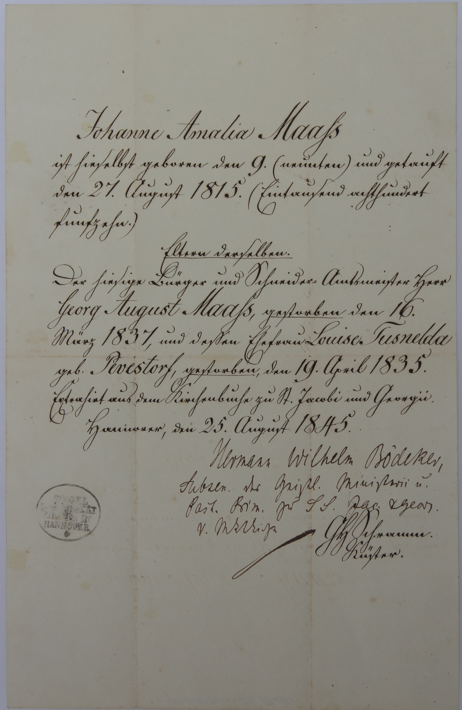

|  | Johanne Amalia Maahs |
| ist hieselbst geboren den 9. (neunten) und getauft | |
| den 27. August 1815 (Eintausend achthundert | |
| fünfzehn). | |
Eltern derselben | |
| Der hiesige Bürger und Schneider-Amtsmeister Herr | |
Georg August Maahs, gestorben den 16. | |
| März 1837, und dessen Ehefrau Louise Tusnelda | |
geb. Pevestorf gestorben, den 19. April 1835. | |
| Extrahiert aus dem Kirchenbuch zu St. Jacobi und Georgii | |
Hannover, den 25. August 1845 | |
| Hermann Wilhelm Bödeker, | |
| ... der Geistl. Ministerii u. | |
| Past. Prin. ... | |
| ... |